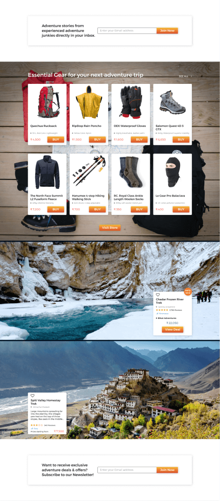

montero®
adventure activity meta-search engine
CASE STUDY
View Prototype

01.
Summary
Montero is an adventure activity meta-search engine that discovers and compares adventure activities in India and Nepal.
It works on a cost-per-click (CPC) business model. It also curates adventure trips into three different buckets: traveler's all-time favorites, hot deals & their categories.
Montero compares activities at two levels.
1. Compare the prices offered by different tour operators on an activity
2. Compare two different activities side by side
Montero is built to provide all the necessary information about an adventure activity that will help you with planning & booking your adventure trip with much ease. It provides the most recent & trusted reviews about activity from its partner organizations. Besides, it has a store section where you can shop the essential gear needed for your next adventure trip.
Deliverables
- UX
- Surveys
- User Research
- User Personas
- Competitive Analysis
- User Stories
- User Flows
- UI
- Wireframes
- Hi-Fi Mockups
- Design Mockups
- Preference Tests
- Usability Tests
- Interactive Prototype
- BRANDING
- Logo Design
- Color Palette
- Typography
- Style Guide
Tools Used
- Figma
- Adobe Illustrator
- Adobe Photoshop
- Balsamiq
- Whimsical
- Marvel
- Maze
- UsabilityHub
- Google Forms
- Grammarly
02.
Challenge
The default steps that most people follow before doing their travel planning are read travel blogs, reviews & ratings, visit different OTA websites and make a note of what they are offering at that price listed. Some respondents also said they check the tour agency's social presence and even take suggestions from their friends or people who have traveled before.
The chief factors that influence one's travel decision are the pricing details, reviews & ratings, cost inclusions & exclusions, contact details of the tour agency/ operator, photos & videos, a detailed itinerary, knowledge about the location and information on things to carry.
This brings us to a short conclusion on what the users are expecting from a platform like Montero: Close this gap - researching heavily on different websites, then comparing them and basing your decision after a word of mouth referral from your friend. Any activity that you search on Montero should display all of this information. It should also compare two activities side-by-side across their parameters.
03.
Solution
Montero solves two crucial problems for both sides of the marketplace – travelers and tour operators.
For travelers, Montero enables a quick way to search hundreds of organized trips from various operators and choose the right one with confidence. Essentially it delivers modern reviews and search capabilities for this product type which users have come to expect for any significant purchase. So, essentially, they save time, money and stress while getting a well-planned trip, without planning themselves.
For travel brands, Montero brings qualified new customers and enables companies to display and build their brand credibly. Many of the world's most unique and authentic guided tours are offered by small to mid-sized operators. Their digital infrastructure and small teams limit their ability to effectively market and distribute their products to their core consumer, who are increasingly starting the trip planning process online. Montero helps to easily modernize this process, bringing volume and scale to suppliers, no matter how many passengers they carry or how much they spend on marketing.
01.
Discovery
No mainstream online marketplace existed for travelers in India & Nepal to find and compare multi-day tours and packaged travel experiences, yet demand was on the rise. There was a need and opportunity for a specialty-reviews and search site that catered to the unique needs of customers looking for a multi-day tour – not just a day tour. No search engines existed for multi-day tours and adventure trips and the major reviews websites did not have a category for this type of travel. Additionally, the organized leisure travel was a large market in aggregate, though small relative to the total travel space, with limited competition.
Three key trends that required to be addressed:
First, consumers want to explore more parts of the globe, but they want to do it in comfort and within a specific budget. Secondly, many forms of organized travel, like adventure trips and river cruises, are gaining popularity. Consumers are busier than ever and don't want to spend time planning the logistics of multi-destination international trips themselves. Many prefer not to rely on agents. Finally, practically all consumers today start their research online for any major purchase. They expect an easy way to find trustworthy reviews from a third party.
In short, consumers had to do a lot of grunt work from fixing upon a travel date, finding available activities during that period, visiting different OTA websites to see how much they are charging and what they are offering at that price point, reading user reviews and travel blogs from various sources, and comparing and processing all of this before making a decision. Once the decision was made, it was time for preparing for that activity (if it was a multi-day adventure). It was tedious to make a note of every item that you would need and then look out for them on the internet to buy them.
There was a need and a market to bring search, trustworthy information, reviews, ratings, and e-commerce under one roof.
02.
User Research & Analysis
Surveys & User Research
A user survey was conducted to collect information and data points about consumers' needs and factors that influence their decision. It gave me metrics about consumers' travel choices, how they plan their travel, what do they consider on a trip and what they would like to see in a service like Montero. It helped me identify my potential users and their level of understanding with technology, pain points & frustrations, needs and wants. The User Survey pointed out some key characteristics of how people plan their travel and adventure trips in particular.
Summary & Analysis of Responses
Before booking an adventure trip...
-
71%
Visit OTA websites
-
81.7%
Read travel blogs,reviews & ratings
-
20.4%
Check the OTA's social media presence
-
16.1%
Download the OTA's mobile app if any
Factors responsible for decision making
-
Very important
Pricing details, reviews & ratings,cost inclusions & exclusions, contact details of the tour agency, photos & videos, a detailed itinerary and information on things to carry.
-
Nice-to-have
travel blogs, option to customize the tour
-
Does not matter
fixed departure tours & social media presence of the tour agency
User Personas
Based on the survey respondents and after identifying my potential users, I interviewed 12 of them to know more about their travel experiences, how they would plan their travel and adventure trips in particular, what considerations they make, what inspires them to choose a travel destination, and if they are willing to suggest improvements in the existing adventure travel booking services. I clubbed similar users into one bucket and created three unique user personas to summarize their goals, needs and their frustrations regarding adventure travel.
-
Monica
-
25 yo, Architect from Mumbai
- solo traveler, adventure junkie
Would like to see as much relevant information as possible about a place or activity as per my preferences.
Goals
- Read blogs and travelogues about any place/ adventure activity
- Read reviews and check ratings
Needs
- Compare the pricing offered by different tour operators
- See detailed itinerary, photos and videos of that activity
-
Tony
-
44 yo, Technology Consultant from Singapore
- weekender, adventure enthusiast
Would love to see a service that helps me explore and compare different options and plan my trip accordingly
Goals
- Decide the best travel agency for that activity
- Clear information about the cost inclusions & exclusions
Needs
- Suggest me different activities or things to do based on my preferences
- Show me weather conditions & local news about that place
Competitive Analysis
Competition falls into a couple of buckets for Montero given our unique model and product focus. If you look at multi-day tours, there are several specialty OTAs, some who transitioned from being traditional offline travel agencies. However, their model is different. As for an OTA like Trodly, they are incentivized to hide the supplier brand name and induce users to book on their site with their small number of preferred tour operators. Montero has an open meta search reviews model, and we aim to show all relevant brands regardless of whether we have a direct commercial relationship. We put the user experience first.
Which brings us to bucket two – review sites. TripAdvisor is a big ‘competitor' in terms of general traveler expectations around reviews. However they do not have a category for multi-day tour operators and actually specifically prohibit multiday tour operators on their listing page qualifications.
Thrillophilia & Stride are direct competitors but their revenue model is not cost-per-click (CPC). Also, Thrillophilia operates more like an OTA rather a travel activity search platform. Stride is not very popular in India and the tours are not specifically tailored to suit Indian travelers.
- Meta-search platform
- Payments & Booking
- Adventure tours & experiential travel
- Post Reviews
- Detailed Itinerary & Location on map
- Compare tours & activities
- Dashboard & Favorites
- Online Store
View full Competitive SWOT Analysis
View All
03.
Information Architecture
User Stories
The next step in the design process was to organize everything and give a structure to the app. This is known as Information Architecture. I started by defining the minimum requirements or deliverables for the app by drafting the User Stories.
User Stories is an exercise to put the users' needs and goals and competitors' features into different user type buckets. In general, there are three user types: new user, returning user and all users. The information collected from surveys, interviews and competitive analysis has to be grouped into these user types accordingly. That lays the foundation for the next step i.e. wireframes and defines my MVP goals in a clear way.
- User Type
- As a new user
- As a new user
- As a returning user
- As a returning user
- All users
- All users
- User Story
- I want to enter the name of the city/adventure activity in the search box
- I want to see trending hot deals having great discounts
- I want to add listings to my favorite lists
- I want to make personalized lists
- I want to compare 2 or more adventure activity listings side-by-side
- I want to buy things to carry & trip essentials
- Reason
- As it's a search engine
- As I want to spend less on my next travel
- For further reference
- For further reference
- This will help me decide quickly which activity & OTA to go for
- It's always nice to buy things to carry at the time of booking
User Flows & Sitemap
User Flows are flowchart diagrams that explain the different processes involved in accomplishing a task from your MVP. It lays out steps & actions in a particular order and sequence that the user needs to undertake in order to get to the end of the task.
Since it's a meta-search engine based on CPC business model, the most important user flow is for a user to click on a deal that appeals the most. There are several user-flows that explain how other tasks are to be done. Besides, the sitemap explains the skeleton on what the site is built upon.
Wireframes & Hi-Fi Mockups
Wireframe sketching is the first step where you translate written matter into its visual layout. They are low fidelity in nature and does not contain an actual copy. They help you to decide the visual layout by placing appropriate UI elements and sizing them accordingly.
Landing Page
Search Results
04.
Visual Design & Branding
Design Mockups
This section marks the beginning of UI deliverables. It's the most exciting part of the design process. It's also the most comprehensive and crucial project stage as it involves designing detailed mockups of the website, designing the logo, choosing an appropriate color scheme and typeface and eventually setting up a style guide that describes the usage of each type of design elements used in the website and also speaks a few words about the brand, Montero.
Following the framework established in the wireframes & hi-fi mockups, I created polished design mockups each with proper alignment. size, color, and suitable imagery. I conducted preference tests to base my design decisions.
Preference Tests
I conducted a handful of preference tests to determine what design style regarding certain UI components was the most preferred one.
A couple of examples down here.
Hero Image
(Before)
(After)
Featured Activities Section
(Before)
(After)

Hot Deals Card
(Before)
(After)
View All Preference Tests' Reports
View All
Logo Design
The Montero logo is a universal signature we use across all our communications. We want it to be instantly recognizable, so consistency is important用lease don't edit, change, distort, recolor, or reconfigure it.
It has a very modern appeal to it and conveys the user that the information on this website is related to mountains or adventure activities in the mountains. Besides, it reads the letter "M" while eyeballing it.
The colors used in the creation of logo are different shades of Bluish green (Teal) resembling a range of mountains situated behind one another (cascading mountains). There's a fresh gradient ranging from dark red to yellow which symbolizes the sky at sunset. To provide sufficient contrast between the gradient & the shades of teal, white color is used to symbolize the snow-capped mountain peaks.
The logo as a whole appears to be in a 3-point perspective with the mountains inclined & vanishing towards the left & right.
-
-
Snow-capped mountain peak
To new heights!
-
montero logo in its original colorform
summer
-
Isolation Zone
Clear space
-
-
Grayscale form
monochrome
-
Color Palette
The primary color palette is made up of a complimentary color scheme consisting of orange & shades of teal. Some primary colors are taken from the colors found in the logo. The secondary color palette consists a mix of colors each one suiting a specific purpose in the context.
Logo colors
- Summer
- #F4BB3A RGB (244, 187, 58) - 0%
- #ED7C31 RGB (237, 124, 49) - 34.82%
- #D6562B RGB (214, 86, 43) - 63.74%
- #573734 RGB (87, 55, 52) - 97.75%
- White
- #FFFFFF RGB (255,255,255)
- Teal
- #007C89 RGB (0, 124, 137)
- Dark Teal
- #005568 RGB (0, 85, 104)
- Montero Blue
- #000F1D RGB (0, 15, 29)
Primary Colors
- Summer
- #F4BB3A RGB (244, 187, 58) - 0%
- #ED7C31 RGB (237, 124, 49) - 34.82%
- #D6562B RGB (214, 86, 43) - 63.74%
- #573734 RGB (87, 55, 52) - 97.75%
- Montero Orange
- #ED7C31 RGB (237, 124, 49)
- Montero Blue
- #000F1D RGB (0, 15, 29)
- White
- #FFFFFF RGB (255,255,255)
- Black
- #222222 RGB (34, 34, 34)
Typography
We use just one typeface for Montero, namely Montserrat.
Montserrat is a geometric sans-serif typeface designed by Argentinian designer Julieta Ulanovsky. The design was inspired by signage from her historical Buenos Aires neighborhood of the same name.
The Montserrat font family has nine weights, extra light, thin, light, regular, medium, semi-bold, bold, extra-bold, and black. The variety of weights further aids its versatility and usability.
Fun and geometric letterforms make this font approachable with a sense of warmth and energy. On the flip-side, it is also refined, strong and highly-legible. Overall, a very versatile typeface.
Montero Style Guide & Design System
Our brand, and how we use it.
This is the Montero style guide & design system. Here you'll read about our lovingly crafted brand, its graphics assets, as well as internal guidelines for using these various resources.
The goal of these guidelines is to prevent Montero from being used to trick or confuse anyone looking for official Montero resources and to clarify how legitimate Montero-related businesses and projects can legally use them.
It consists of information on our logo, color, typography, photography and various UI elements that form the product.
View full Style Guide & Design System
View All
05.
Development
Prototype & User Testing
The final stage was to develop an Interactive prototype of the service.
Since the whole prototype contained a lot of screens and there were so many important tasks a user could perform within the service, I developed a Maze with 9 missions in the Maze app where the user is given a script to complete a particular task (mission).
Analysis:
- Homepage Design:
- Upvote: Great graphics, easy to find everything, gets straight into onboarding
- Downvote: Sometimes content can be overwhelming.
- Search Results:
- Upvote: Pretty straightforward design, gives almost all possible information in one place.Adheres to the MVP.
- Downvote: Design can be made smaller in size to cater to smaller desktop sizes.
- Maze Test:
- Upvote: The script is interesting as it contains a lot of subtle hints & guidelines to solve a task. Some loved the challenge of getting to the end of a mission.
- Downvote: Some tasks were too long & the direct path to success was shortened as Maze only looks at the end screen & not the actual path. Maze test was failing due to heavy graphics used for the prototype. Interactive states led to a lot of confusion as it resulted in double-clicks and that frustrated the testers, so they gave up some of the missions.
05.
Conclusion
This is by far the most UX/UI intensive project I have undertaken. I have spent 4 months working on this project starting from brainstorming to deploying the interactive prototype and finally making an account of each process in this case study.
I have a lot to say regarding this project as I have left no stones unturned when it came to putting in the best of my efforts at each stage of this project. That said, mistakes are made even when you go all in.
Some tips to avoid repeating them in the future:
- Make all the wireframes of the product/service in the start instead of doing it in stages
- Stick to the MVP goals throughout the project phase; adding extra features is always tempting but this can burn your time and energy.
- Avoid spending too much time into the minutiae of the copy for the service.
- Take into consideration different screen sizes and design accordingly.
- Maze missions can be bucketed into different separate maze tests and this can be less overwhelming for the user.
- Maze mission script should not be too long and too complex to understand. When in doubt, follow the KISS principle.
- Avoid implementing interactive states wherever possible as this results in double-clicks and may confuse the user about the integrity of the prototype.
- Conduct a live user testing video of the prototype in action if opportunity allows for. This helps to present your prototype to new users & potential users who have no clue what is your prototype about and how it works.
Looking at the service as a whole, I am confident that the solutions I came up with, will definitely solve the problem that people face with existing adventure trip booking services and websites.
And I hope to see our users considering Montero as their first choice when it comes to adventure travel!
Project by
PANKHIL MISTRY
UX / UI Designer